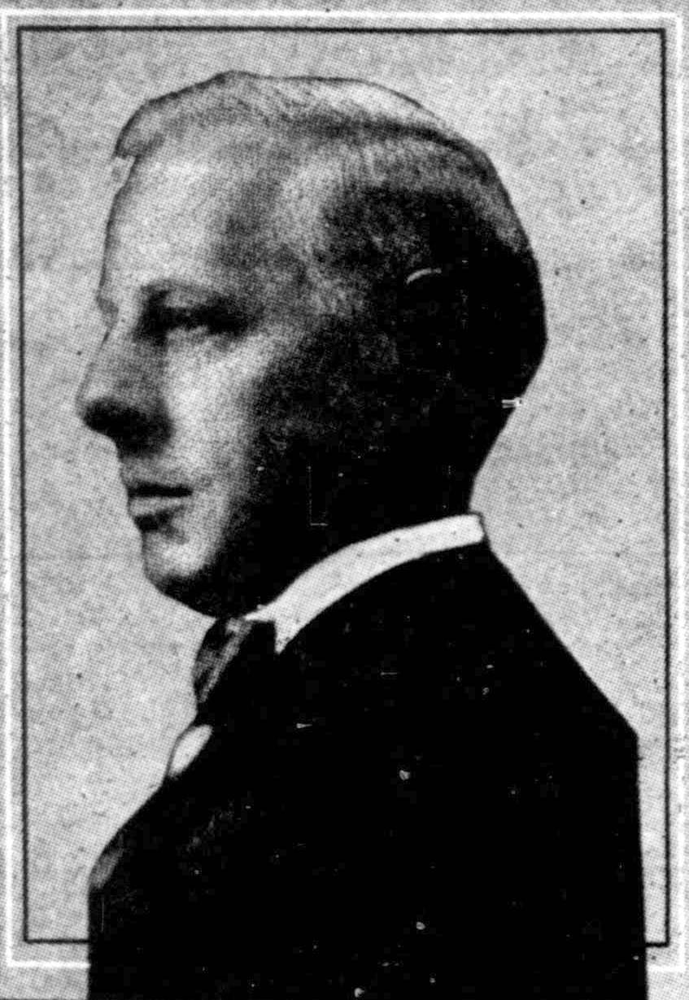
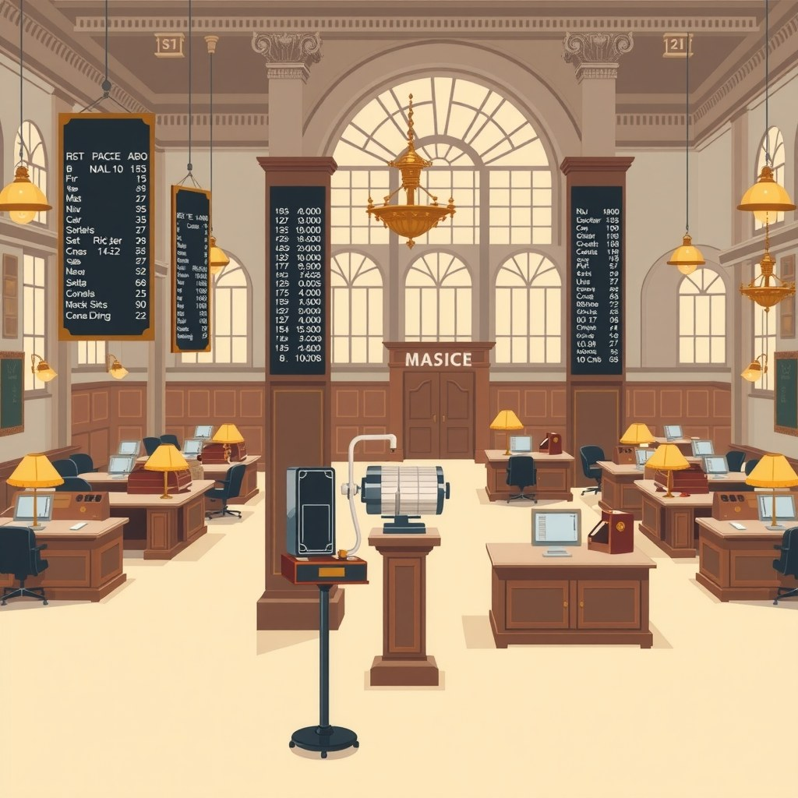

Kisah tentang spekulasi pasar sering kali hanya menyoroti kilau keuntungan kilat dan lonjakan kekayaan dalam semalam. Padahal, pelajaran paling berharga bagi setiap pelaku bisnis dan investor justru berada di balik kejatuhan para legenda pasar yang merasa sudah menaklukkan risiko. Dalam buku Big Mistakes: The Best Investors and Their Worst Investments karya Michael Batnick, perjalanan hidup Jesse Livermore menjadi pengingat paling nyata tentang betapa mematikannya kombinasi antara rasa paling benar, ego pribadi, dan pengabaian manajemen risiko dasar.
Seorang pelaku usaha, pemilik toko online, maupun trader pemula bisa saja memiliki kejelian dan analisis pasar yang sangat tajam. Namun, tanpa kedisiplinan mengelola risiko modal, satu keputusan yang salah dan dipertahankan terlalu lama sudah lebih dari cukup untuk menghapus seluruh hasil kerja keras selama bertahun-tahun. Perjalanan Livermore memberikan cermin jernih tentang bagaimana keberhasilan besar justru bisa menjadi jebakan psikologis paling berbahaya jika kita melupakan batas aman modal.
Mulanya dari Mana: Bakat Alami Membaca Pasar dan Awal Kejayaan

Jesse Livermore memulai langkahnya dari posisi paling bawah. Di usia 14 tahun, ia bekerja sebagai papan ketik angka transaksi (board boy) di pialang saham Paine Webber di Boston. Tugas sehari-harinya adalah menuliskan perubahan harga saham dari pita transaksi (ticker tape) ke papan tulis kapur. Dari pekerjaan rutin inilah, Livermore muda mulai menyadari sebuah pola tak kasat mata: harga saham tidak bergerak secara acak, melainkan mengikuti perilaku dan psikologi kolektif para pelaku pasar.
Membawa modal awal yang sangat minim, Livermore mulai mempraktikkan pengamatannya di rumah-rumah taruhan lokal yang dikenal sebagai bucket shops. Tempat-tempat ini memungkinkan orang awam bertaruh pada pergerakan harga saham tanpa benar-benar memiliki aset fisiknya. Kejelian Livermore dalam mengamati pergerakan harga seketika membuat modal kecilnya bertumbuh pesat. Di usia 15 tahun, ia berhasil mengumpulkan uang tunai $1.000—angka yang sangat besar pada akhir abad ke-19. Kehebatannya membuat hampir seluruh pialang taruhan di Boston melarang Livermore bertransaksi karena ia terlalu sering menang, hingga ia dijuluki sebagai Boy Plunger.
Memasuki usia dewasa, Livermore memutuskan pindah ke pialang resmi di Wall Street, New York. Di arena yang jauh lebih besar ini, ia menyadari bahwa strategi kecepatan jangka pendek di rumah taruhan tidak lagi bekerja karena adanya tenggat eksekusi order. Ia pun beradaptasi dan mengembangkan sistem analisis harga yang lebih matang: memetakan titik balik utama (pivot points), bertransaksi searah dengan tren besar pasar, dan yang paling utama, selalu keluar dengan cepat begitu harga bergerak berlawanan dengan analisanya melebihi 10%.
Prinsip dasar Livermore di masa awal sangat sederhana namun sangat efektif. Ia menganggap modal perdagangan seperti persediaan barang di toko. Jika sebuah barang tidak laku atau nilainya terus menurun, pedagang yang bijak harus segera menjualnya rugi untuk menyelamatkan sisa modal, bukan malah membiarkannya menumpuk di gudang. Kedisiplinan inilah yang membawa kekayaannya berlipat ganda hingga jutaan dolar pada krisis keuangan Wall Street tahun 1907, di mana ia bahkan mendapat permintaan khusus dari banker legendaris J.P. Morgan untuk berhenti melakukan aksi jual demi menyelamatkan bursa saham Amerika Serikat.
Titik Baliknya: Godaan Kapas dan Kebangkrutan Pertama

Namun, ujian terberat bagi seorang pelaku bisnis atau investor datang bukan saat ia sedang kekurangan modal, melainkan saat ia sedang berada di puncak kejayaan dan merasa paling menguasai keadaan. Setelah kesuksesan spektakuler tahun 1907, Livermore tergoda untuk merambah perdagangan komoditas kapas. Di sinilah ia melakukan kesalahan fatal pertama: membiarkan opini orang lain merusak aturan objektif yang ia bangun sendiri.
Livermore berkolaborasi dengan Percy Thomas, seorang tokoh yang dikenal sebagai raja komoditas kapas di masa itu. Thomas meyakinkan Livermore bahwa pasokan kapas dunia sedang mengalami kelangkaan parah dan harganya akan melonjak tinggi. Padahal, pada awalnya, analisis mandiri Livermore menunjukkan bahwa pasar kapas sedang dalam kondisi lemah. Terbuai oleh karisma Thomas dan rasa percaya diri yang berlebihan, Livermore menutup posisi jualnya dan membalikkan modalnya secara masif untuk membeli kapas.
Ketika harga kapas mulai turun dan berbalik menentang analisanya, bukannya segera keluar sesuai prinsip batas rugi 10% yang selama ini menyelamatkannya, Livermore justru melakukan pelanggaran kedua yang jauh lebih berbahaya: ia terus menambah porsi pembeliannya (averaging down) pada transaksi yang jelas-jelas sedang merugi. Ia terus menyuntikkan uang tunai untuk membeli hingga memegang lebih dari 440.000 bales kapas—posisi bernilai fantastis puluhan juta dolar pada masa itu.
Untuk menutup biaya jaminan (margin call) pada posisi kapas yang terus merosot, Livermore terpaksa menjual saham-saham unggulannya yang justru sedang memberikan keuntungan. Ini adalah pelanggaran total atas hukum dasar yang ia tulis sendiri di kemudian hari. Akibat dari rentetan pelanggaran aturan ini sangat fatal: Livermore mengalami kerugian langsung sebesar $4,5 juta pada transaksi kapas tersebut. Efek domino dari kebangkrutan modal ini menyeret seluruh portofolionya, hingga pada tahun 1909 ia secara resmi dinyatakan bangkrut untuk pertama kalinya dengan meninggalkan beban utang lebih dari $1 juta.
Michael Batnick dalam bukunya menekankan poin krusial yang menjadi akar dari tragedi ini. Livermore tahu betul teori manajemen risiko, namun ego pribadi membisikkan bahwa aturan tersebut tidak berlaku untuk dirinya yang sedang merasa hebat. Sebagaimana ditulis Batnick, kutipan terkenal Livermore menjadi penyesalan abadinya:
"Always sell what shows you a loss and keep what shows you a profit."Ketika seseorang melanggar kalimat sederhana ini, bencana keuangan hanyalah tinggal menunggu waktu.
Apa yang Terjadi Setelahnya: Puncak $100 Juta dan Kebangkrutan Kedua
Kemampuan analisis yang luar biasa membuat Jesse Livermore tidak tertahan di dasar kebangkrutan. Selama bertahun-tahun setelah kejatuhan kapas, ia bekerja keras secara disiplin, melunasi seluruh utang-utangnya secara sukarela, dan membangun kembali kekayaannya dari nol. Puncak dari kejeniusannya terjadi pada krisis besar dunia (Great Depression) yang melanda Wall Street pada tahun 1929.
Pada musim panas 1929, ketika seluruh masyarakat Amerika Serikat terbuai oleh euforia pasar saham yang terus melonjak tinggi tanpa kontrol, Livermore mengamati tanda-tanda kelelahan pasar yang sangat jelas. Saham-saham pemimpin industri mulai gagal mencetak rekor baru, sementara volume transaksi liar menunjukkan bahwa modal besar sedang melakukan distribusi rahasia. Dengan ketelitian tinggi, Livermore membangun posisi jual (short position) secara bertahap pada berbagai saham utama.
Ketika gelombang kepanikan melanda Wall Street pada bulan Oktober 1929 dan melenyapkan kekayaan jutaan orang dalam hitungan hari, Livermore justru mencetak rekor keuntungan pribadi terbesar dalam sejarah finansial dunia: ia mengantongi uang tunai bersih senilai $100 juta (setara dengan puluhan miliar dolar hari ini). Berita tersebut begitu mengejutkan hingga keluarganya sempat mengira ia ikut hancur, sebelum Livermore pulang dan memberitahukan bahwa hari itu adalah hari paling menguntungkan dalam hidupnya.
Namun, raksasanya kekayaan $100 juta tersebut justru kembali memicu rasa kebal terhadap risiko (feeling of invincibility). Keberhasilan luar biasa di tahun 1929 membuat Livermore merasa bahwa insting pasarnya tidak akan pernah salah lagi. Memasuki awal dekade 1930-an, ketika kondisi struktur pasar saham mulai berubah drastis dengan hadirnya regulasi baru pemerintah dan volatilitas abnormal, Livermore kembali mengulang pola kesalahan lama yang sama: mengambil ukuran posisi yang terlalu raksasa, mengabaikan sinyal stop loss, dan menahan transaksi rugi dengan harapan pasar akan kembali mengikuti kemauannya.
Tanpa kedisiplinan membatasi kerugian, kekayaan fantastis $100 juta itu menguap hanya dalam jangka waktu lima tahun. Pada tahun 1934, Livermore menyatakan kebangkrutan keduanya dengan sisa utang mencapai $5 juta kepada puluhan kreditur. Berbeda dengan kebangkrutan pertama di usia muda, kebangkrutan kedua ini menghancurkan mental dan stamina psikologisnya secara permanen. Upaya-upayanya di kemudian hari untuk membangun kembali modalnya selalu gagal karena rasa percaya dirinya telah runtuh. Pada November 1940, Livermore mengakhiri hidupnya di New York. Catatan pengadilan mengonfirmasi ia hanya meninggalkan aset bersih yang tersisa sebesar $107.047 di tengah liabilitas utang senilai $463.517.
Keberhasilan finansial berulang kali tidak membuat siapa pun kebal dari hukum dasar risiko. Tanpa batas kerugian yang tegas, satu gelombang keangkuhan cukup untuk menghapus ribuan pencapaian masa lalu.
Pola yang Bisa Kamu Tiru
Bagi pemilik usaha kecil, kreator konten, penjual toko online, maupun pelaku pasar harian, riwayat manis dan pahit Jesse Livermore menawarkan kerangka tindakan nyata untuk menjaga kelangsungan bisnis agar tidak terperosok ke dalam jurang kebangkrutan yang sama:
Tetapkan Batas Kerugian Maksimal Sebelum Memulai
Jangan pernah meluncurkan produk baru, membeli stok barang raksasa, atau mengambil posisi investasi tanpa menetapkan angka rugi toleransi maksimal terlebih dahulu. Jika sebuah lini bisnis atau proyek sudah menyerap modal hingga batas risiko (misalnya 5–10% dari total ekuitas kas), segera hentikan proyek tersebut tanpa kompromi. Mengaku salah lebih awal jauh lebih murah daripada mempertahankan gengsi.
Haram Menambah Modal pada Produk atau Transaksi yang Merugi
Kesalahan paling umum pemilik bisnis adalah menyuntikkan uang kas dari lini bisnis yang sehat ke dalam unit usaha yang terbukti gagal dengan harapan barang mati tersebut bisa laku di kemudian hari. Tindakan ini persis seperti kesalahan Livermore menyuntikkan dana ke komoditas kapas. Likuidasi stok mati secepat mungkin walau harus rugi, lalu alokasikan sisa modal ke produk yang terbukti memenangi pasar.
Pisahkan Keputusan Bisnis dari Opini dan Kebisingan Luar
Livermore hancur ketika ia mengganti analisa objektifnya dengan nasihat manis Percy Thomas. Dalam mengelola bisnis modern, jangan tergiur mengubah arah operasional hanya karena tren sesaat atau klaim manis pihak luar tanpa didukung oleh data laporan keuangan nyata dari tokomu sendiri.
Jaga Cadangan Kas Darurat yang Tidak Boleh Disentuh
Livermore selalu menggunakan leverage (utang/fasilitas margin) maksimal saat merasa yakin, sehingga saat pasar berbalik, ia tidak memiliki jaring pengaman kas sama sekali. Selalu sisihkan minimal 3–6 bulan biaya operasional dalam bentuk kas murni yang sama sekali terpisah dari risiko spekulasi bisnis.
Untuk memahami lebih dalam mengenai pengelolaan alokasi kas dan perlindungan ekuitas usaha, kamu bisa membaca panduan praktis lainnya di katalog artikel BiB yang secara konsisten membahas sistem kerja bisnis yang realistis.
Biar Jujur: Yang Tidak Bisa Ditiru
Secara jujur, kita harus mengakui bahwa Jesse Livermore memiliki kombinasi bakat genetis dan kondisi era yang sangat spesifik yang tidak bisa direplikasi oleh orang awam saat ini. Ia dianugerahi daya ingat fotografis terhadap angka-angka transaksi dan intuisi psikologis luar biasa yang terasah sejak usia 14 tahun. Menganggap kita bisa meniru kemampuan instingnya tanpa proses latihan ribuan jam adalah sebuah bentuk ilusi.
Selain itu, struktur pasar keuangan era awal abad ke-20 sangat berbeda dengan era modern. Di zaman Livermore, belum ada lembaga pengawas ketat seperti SEC, tidak ada mekanisme penghentian otomatis perdagangan (circuit breaker), dan batas penggunaan pinjaman marjin sangat longgar. Lingkungan tanpa aturan ini memungkinkan pertumbuhan kekayaan dari $1.000 menjadi $100 juta, namun di saat yang sama juga menyediakan fasilitas kebangkrutan yang sangat cepat.
Tingkat toleransi risiko Livermore juga tergolong ekstrem dan menyerupai perilaku penjudi berat—sebuah karakter kepribadian yang memungkinkannya mencetak rekor raksasa, tetapi secara statistik hampir pasti berakhir dengan kehancuran jika dilakukan berulang kali. Kunci pembelajaran kita dari kisah ini bukanlah meniru gaya spekulasinya yang agresif, melainkan mengambil pengingat paling mendasar: jika sosok sekelas Livermore yang dianugerahi kejeniusan luar biasa saja bisa hancur total akibat melanggar manajemen risiko, apalagi kita yang beroperasi dengan skala modal dan keahlian yang jauh lebih terbatas.
Sama seperti saat membedah pelajaran dari kisah sukses Jack Ma atau mencermati dinamika ketidakpastian dalam analisis kondisi pasar, ketahanan finansial sebuah usaha tidak diukur dari seberapa besar keuntungan yang bisa kita raih saat kondisi sedang membaik, melainkan dari seberapa disiplin kita mengamankan benteng pertahanan modal saat keputusan yang kita ambil ternyata salah.
Sumber
- Big Mistakes: The Best Investors and Their Worst Investments — Michael Batnick (E-Book) · 2018